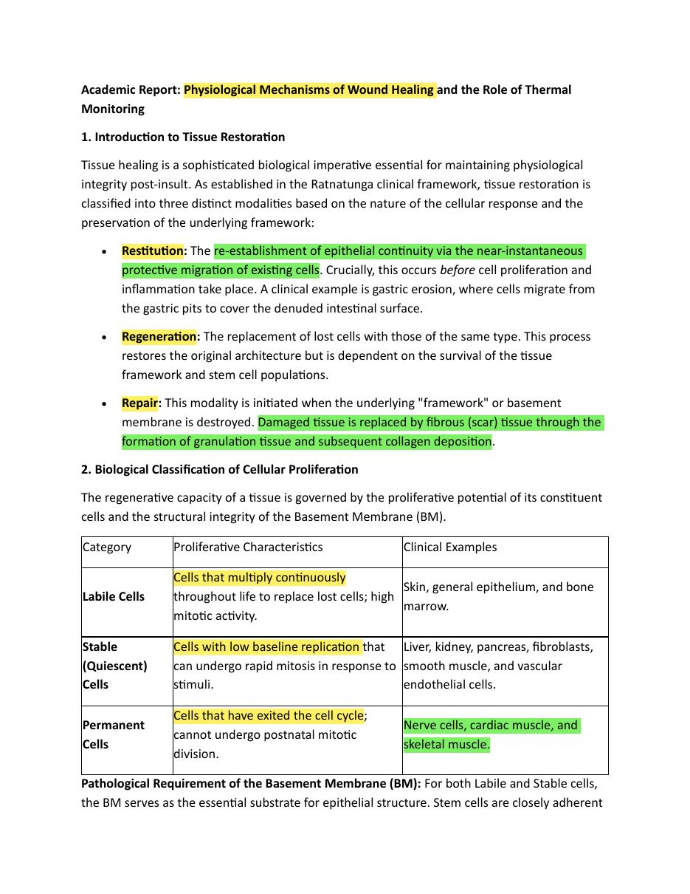
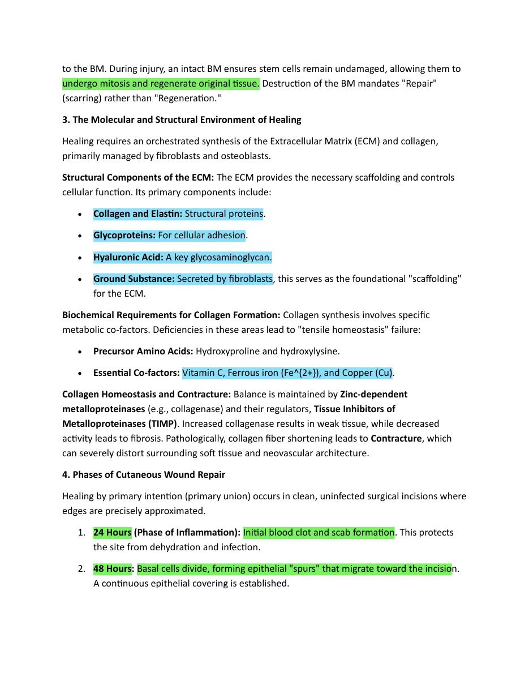

Week 2
Thermal Monitoring Methods & Wound Healing Biology
Evaluated all temperature measurement technologies for wound monitoring suitability, and reviewed the physiological mechanisms of wound healing.
Full Work Done in Week 2
Week 2 continued the biological and engineering review of wound healing and smart-dressing methods. The work examined wound-healing stages, abnormal temperature patterns and limitations of previous wound-monitoring systems, especially single-parameter approaches and designs that are difficult to translate into a low-cost undergraduate prototype.
- Studied wound healing stages and the biological meaning of temperature change.
- Reviewed smart bandage methods and earlier sensor-integration concepts.
- Compared clinical relevance with practical buildability for the project.
- Prepared evidence that later supported the choice of pH, temperature and moisture/exudate.
Read more details for Week 2
In Week 2, the literature review connected clinical wound information with measurable engineering parameters. Existing smart-dressing systems and previously reported sensor types were compared, showing that pH, temperature and moisture repeatedly appear as important wound-monitoring parameters.
This week was important because it translated the broad medical problem into measurable engineering quantities. It also clarified that the final system should be low-cost, thin and suitable for placement under a dressing without disturbing the wound.
- Compared previous smart wound-monitoring methods.
- Identified pH, temperature and moisture/exudate as useful sensing parameters.
- Studied the need for a disposable wound-contact layer and reusable electronics.
- Built the background for selecting practical sensors in the next weeks.
Week 2 · Document 1
Temperature Measurement Methods for Wound Monitoring — Comparison Table
| Method | Accuracy | Response | Real-Time Suitability | Pros | Cons |
|---|---|---|---|---|---|
| Thermistor (NTC) | ±0.1–0.2°C | Fast | Excellent | Highly sensitive 30–40°C; low cost; miniaturizable | Non-linear; requires calibration |
| RTD (Platinum) | ±0.15°C (Class A) | Moderate | Moderate–Good | Stable; linear; highly accurate | Expensive; rigid forms less conformal |
| Thermocouple | ±0.5–1°C | Very Fast | Moderate | Wide temperature range; fast | Low sensitivity in bio-range; needs cold-junction |
| Digital IC (TMP117) | ±0.1°C | Fast | Excellent | I2C direct; no calibration; ultra-low power | Higher unit cost than thermistors |
| Infrared (IR) | ±0.3–0.5°C | Instant | Good (non-contact) | No skin contact; fast scanning | Biofilm interference; surface-only |

Academic Report — Physiological Mechanisms of Wound Healing and the Role of Thermal Monitoring (Page 1).

Cellular proliferation classification and Basement Membrane role in tissue regeneration vs. repair pathways.

Referenced paper: Smart Band for Wound Monitoring Using Temperature and Moisture Sensor (IJNRD, 2025).
Week 2 Conclusion
Based on the comparison, the digital IC sensor (TMP117) was identified as the primary candidate — offering ±0.1°C accuracy, I2C interface, no calibration requirement, and ultra-low power. Wound healing biology review confirmed: temperature tracks all three healing phases (inflammation, proliferation, remodeling), making continuous monitoring scientifically valid.
Week 2 · Document 2
Academic Report: Physiological Mechanisms of Wound Healing & Role of Thermal Monitoring
Tissue Restitution
Re-establishment of epithelial continuity via migration of existing cells — occurs before proliferation and inflammation. Example: gastric erosion recovery.
Tissue Regeneration
Replacement of lost cells with the same cell type. Requires intact Basement Membrane (BM) and surviving stem cells. Labile and stable cells can regenerate.
Tissue Repair (Scarring)
When BM is destroyed — damaged tissue is replaced by fibrous scar tissue through granulation tissue formation and collagen deposition.
Cell Proliferation Classification
| Category | Behavior | Examples | Thermal Significance |
|---|---|---|---|
| Labile Cells | Multiply continuously throughout life | Skin, epithelium, bone marrow | High metabolic activity → elevated temperature signal |
| Stable (Quiescent) Cells | Low baseline, rapid mitosis on stimulus | Liver, kidney, fibroblasts, vascular endothelium | Temperature rise indicates activation |
| Permanent Cells | Cannot divide post-natally | Nerve cells, cardiac muscle, skeletal muscle | Loss = irreversible; cold spots signal necrosis |